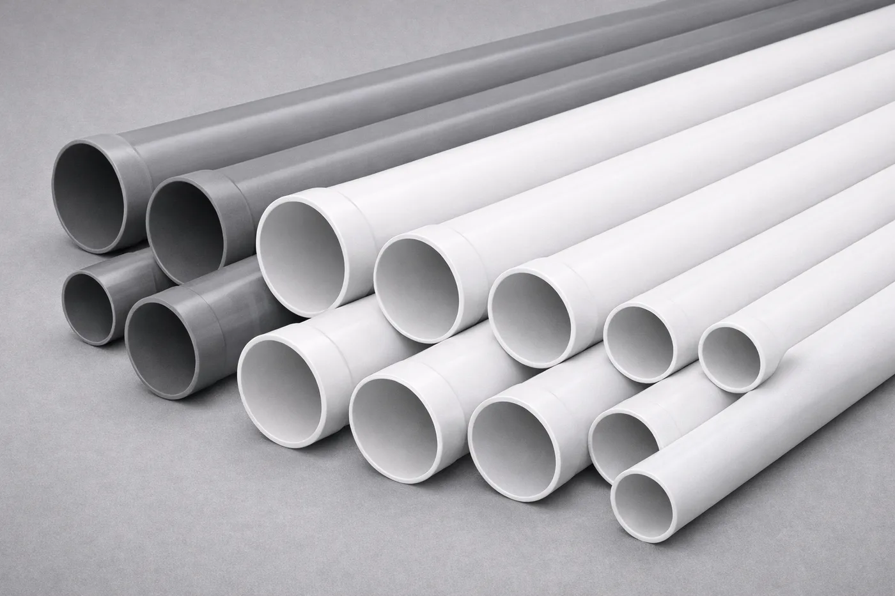

MISIÓN
Proveer las mejores soluciones en el menor tiempo posible para el cliente, enfatizando la optimización de la relación costo y calidad.
Plastiflex S.A. produce tubos y accesorios de PVC de alta calidad para usos múltiples: riego, conducción de agua potable, canalización de cableados, redes pluviales y cloacales, y drenaje de suelos.

La empresa
Nuestra planta, ubicada en el Polo Industrial Ezeiza, Provincia de Buenos Aires, cuenta con un avanzado equipamiento tecnológico operado por un equipo de profesionales y técnicos especializados, que posibilitan respuestas ágiles y eficientes a los requerimientos de cada cliente.
Nuestro proceso de producción es estrictamente controlado en forma continua, lo que permite ofrecer un producto confiable. La implementación de procesos de mejoramiento continuo, la certificación de normas IRAM y el cumplimiento de las reglamentaciones nacionales e internacionales sobre saneamiento ambiental garantizan un excelente resultado con el uso de nuestros productos.
En Plastiflex S.A. encontrará el asesoramiento y la atención personalizada que usted requiere, porque mantenemos un firme compromiso con la mejora de nuestros productos, el cuidado del medio ambiente y el servicio a nuestros clientes.

Misión · Visión
Proveer las mejores soluciones en el menor tiempo posible para el cliente, enfatizando la optimización de la relación costo y calidad.
Acercar el agua a la mayor cantidad de gente posible, produciendo el menor impacto en el medio ambiente. Convertirse en el mayor referente nacional del mercado de tuberías de PVC.
Valores
Por crear valor agregado y soluciones superiores para el cliente.
Aprender cada día más escuchando a nuestros clientes, a nuestro equipo y a nuestra industria.
Respetar los puntos de vista del otro. Pensamiento crítico para lograr resultados extraordinarios.
Demostrar honestidad y juego limpio en cada interacción, tanto a nivel interno como externo.